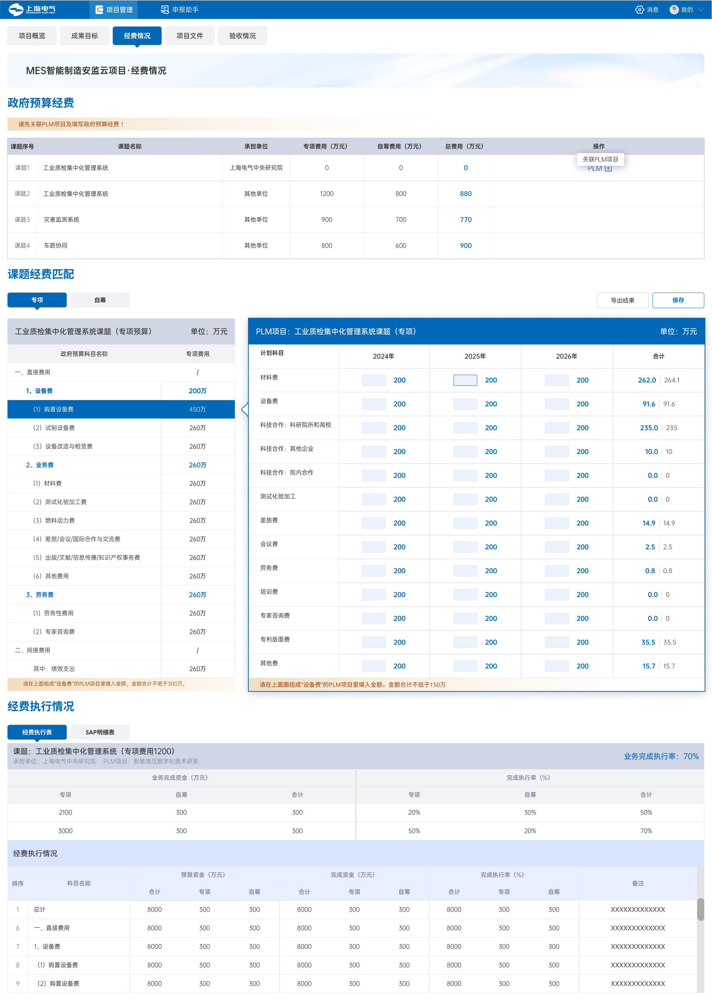
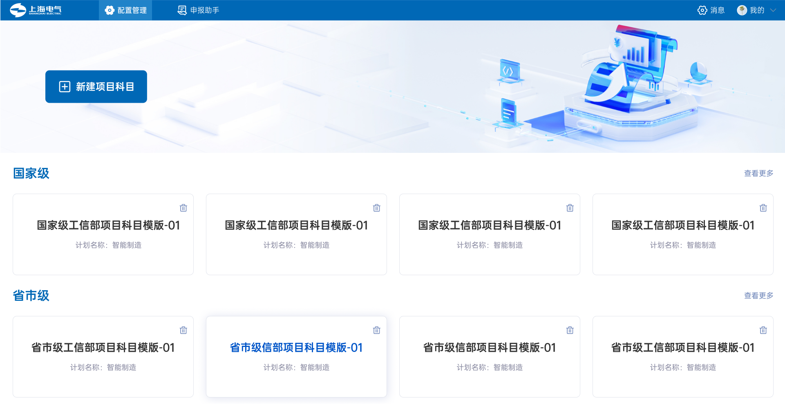
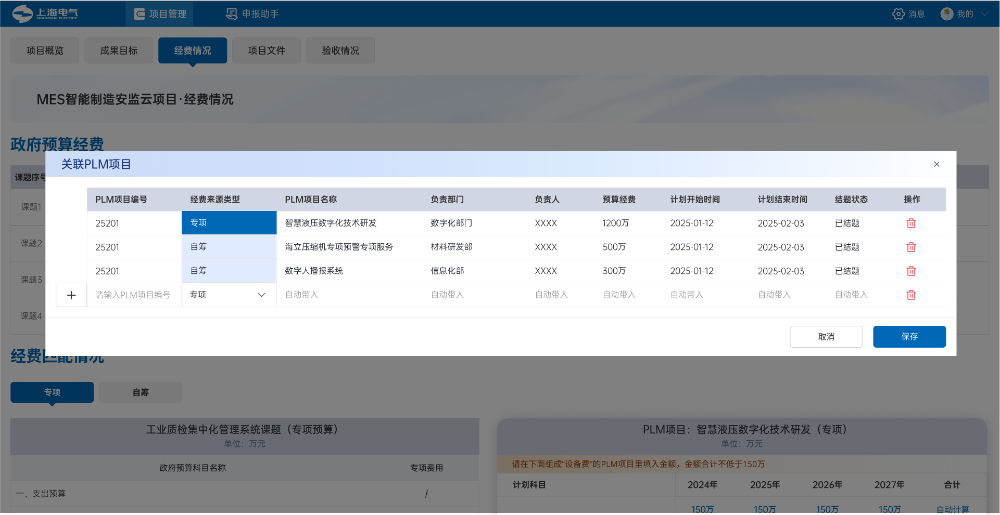
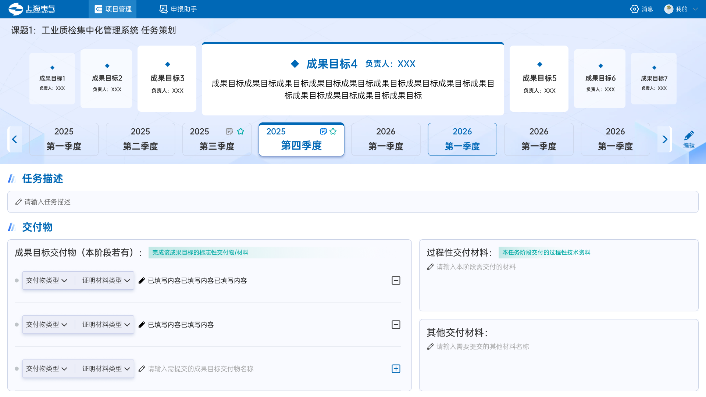
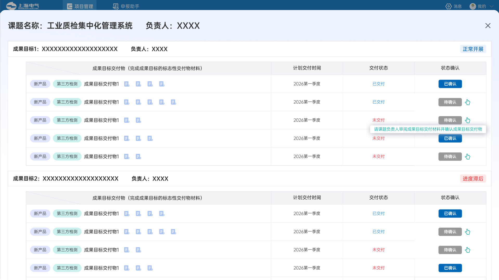

负责人关心任务是否滞后、交付物是否齐全、验收材料在哪里。
Enterprise Case · Complex B2B
把两套账本，变成一套能协作的项目系统。
D4S 面向政府科研专项，把项目、课题、成果目标、季度节点、交付物与企业 SAP 经费执行组织进同一条业务链。
政府口径项目 → 课题
→ 成果目标
→ 节点 → 交付物
→ 成果目标
→ 节点 → 交付物
对齐
企业口径PLM 项目
→ SAP 科目
→ 凭证明细
→ SAP 科目
→ 凭证明细
The Conflict
同一笔设备费，在两个体系里有不同名字、金额口径和负责人。
政府按专项任务和成果验收，企业内部按 PLM 与 SAP 记账。过去两套 Excel 并排核对，编码靠人工填写；项目执行、材料催收和验收归档又散落在微信群、邮件与个人记录里。
财务需要把政府预算科目匹配到企业 SAP 计划科目，并持续核对执行。
既保留各自熟悉的口径，又建立稳定、可复用的对应关系。
My Role
方案由业务方和团队共同形成，我负责让它在界面上真正可用。
前期参与需求讨论
产品立项后，与业务方一起理解政府科研专项、项目管理与财务对账的真实流程。
中期验证业务适配
与业务负责人、产品共同评审原型，判断方案是否覆盖角色任务与业务规则。
后期完成设计交付
负责整套交互、高保真 UI 落地，并持续参与重点功能迭代。
5 人团队：1 产品、1 设计、2 前端、1 后端。双栏匹配、经费对照和五层业务骨架均为业务方与团队共创，不包装成个人单独定义。
Key Interaction 01
把“对账”从抄编码，变成两边直接匹配。
左边保留政府预算科目的层级，右边展示 PLM 计划科目。用户在同一上下文中完成关联、金额填写和合法性确认，不再在两份表之间来回搬运。

不强迫任何一方先学习另一方的语言，在视觉上建立一一对应。
金额与匹配关系在填写时提示，不等提交后才告诉用户哪里不成立。
用整屏状态区分两种经费口径，降低混填风险。
Key Interaction 02
一次匹配不该只解决眼前这个项目，还要沉淀成下一次能复用的模板。
国家级、省市级、地区级项目有相似但不完全相同的科目结构。配置结果按行政层级沉淀，下一次从模板开始，只处理增量差异。


Beyond Finance
经费只是枢纽，项目还要从立项一路走到验收。
立项申报成果目标季度节点执行跟踪材料归档项目验收


会议通知内嵌待填执行情况与截止时间，成员不必再次寻找入口。
用“要求—示例—上传”三段结构，让执行者始终知道该交什么、交成什么样。
材料继承节点与交付物标签进入文件库，验收阶段直接引用，避免重复整理。
Outcome
一套已上线、持续迭代的企业级系统。
D4S 已上线并持续迭代。当前没有在作品集中使用未经确认的效率提升、用户规模或项目称号；这里展示的是已经成立的设计事实与上线状态。
它证明的不是我发明了业务规则，而是我能进入复杂业务，与业务方和团队共同把问题梳理清楚，并对最终交互质量负责。